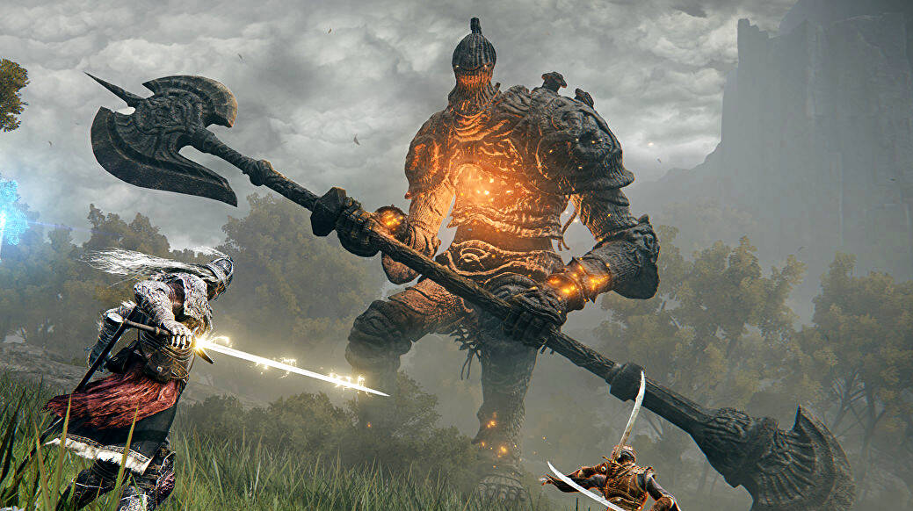

Ігровий процес
Однокористувацька гра
Elden Ring являє собою action/RPG від третьої особи з великою кількістю способів битви з ворогами — навіть
більшою, ніж у серії Souls, за допомогою великої кількості різноманітної зброї та чарівних предметів. Хоча гра
не має прямого зв'язку з цією серією, з точки зору ігрового процесу вона більшою мірою заснована на Dark
Souls. Подібно до Souls, сетинґ Elden Ring являє собою фентезі в західному стилі.
В порівнянні з Sekiro:
Shadows Die Twice, попередньою грою студії, Elden Ring більше акцентується на RPG-елементах та менше— на
action; на відміну від Sekiro, де під керуванням гравця перебуває заздалегідь визначений герой, в Elden Ring
гравець може створити та налаштувати свого унікального персонажа. Elden Ring не має рівнів складності, гра
однакова і для новачків і для ветеранів жанру. Проте на свій ризик гравці вільні вирушати в необов'язкові
небезпечні локації, щоб отримати насиченіший сюжет і цінні предмети.
Протагоністи гри називаються Затьмареними. На початку пропонується обрати клас персонажа, чоловічу чи жіночу
статуру, вік, деталі зовнішності, походження та особливий стартовий предмет. Головні атрибути персонажа — це:
міць (визначає запас здоров'я), розум (запас очок зосередження, потрібні для чаклування), терплячість (впливає
на витривалість, яка витрачається на бойові прийоми), сила (визначає шкоду від завданих атак), спритність
(дозволяє краще користуватися озброєнням і швидше чаклувати), інтелект (впливає на ефективність заклять), віра
(визначає силу заклять, які не вивчаються, а даються спеціальними предметами) та аркани (впливає на шанс
знайти цінніші предмети).

Багатокористувацька гра
В оновленні Colosseum Update було додано 3 арени для PvP-боїв (гравців проти гравців). Щоб брати участь у
дуелях на аренах, потрібно знайти їх усі на карті світу: Колізей Лімгрейва, Колізей Каеліда та Королівський
Колізей. В Колізеї Лімгрейва заборонено прикликати духів на підмогу, тоді як у Колізеї Каеліда дозволено.
Королівський Колізей потрібно знайти, щоб розблокувати багатокористувацький режим, але бої між гравцями на
ньому не проводяться. Пропонується 3 режими
-
Об’єднаний бій
гравці об'єднуються в дві команди по 2, 4 чи 6 учасників у кожній. Бій триває 5 хвилин, перемога
присуджується команді, що здобула найбільше вбивств суперників. Загиблі відроджуються. Дозволено
користуватися пляшечками для відновлення здоров'я та очок зосередження.
-
Бойова ордалія
беруть участь 6 учасників, де кожен повинен боротися з іншими. Переможцем стає той, хто вб'є найбільше
суперників до кінця раунду. Загиблі відроджуються. Дозволено користуватися пляшечками для відновлення
здоров'я та очок зосередження.
-
Дуель
бій, де двоє гравців змагаються один проти одного. Гравець, який вб'є свого суперника, стає переможцем. У
цьому режимі не можна відроджуватися та поповнювати здоров'я і очки зосередження.
Сюжет
Дія Elden Ring відбувається в Проміжних Землях, якими колись правила королева Маріка Вічна. Божество Порядку,
відоме як Вища Воля, дало Маріці Старший Перстень, щоб вона правила Проміжними Землями. В столиці, Лейнделлі,
виросло Ерддерево як тілення Старшого Персня. Але королева не була цілком задоволена даром і забрала зі Старшого
Персня Руну Смерті, яку сховала під охороною свого брата Малікета. Відтоді в її володіннях не стало звичайної
смерті, а замість того душі померлих ставали частиною Ерддерева.
У центрі сюжету Elden Ring — один із багатьох вигнанців Затьмарених, що отримує «запрошення» в Проміжні Землі,
коли до нього прилітає іскра Ерддерева. Герой прибуває до Проміжних земель в надії відновити Старший Перстень і
стати наступним Старшим Лордом. Він стикається з чудовиськом Прищепленим Сціоном, в бою з яким ледве не гине.
Затьмареного знаходить молода жінка Меліна, яка зауважує, що той не має супутниці, яка б давала настанови.
Меліна пропону Затьмареному стати його супутницею, а той повинен взамін супроводити її до Ерддерева, де Меліна
зможе виконати своє таємниче призначення.